Deploy Gradio App to Hugging Face Space - Full Step by Step Guide
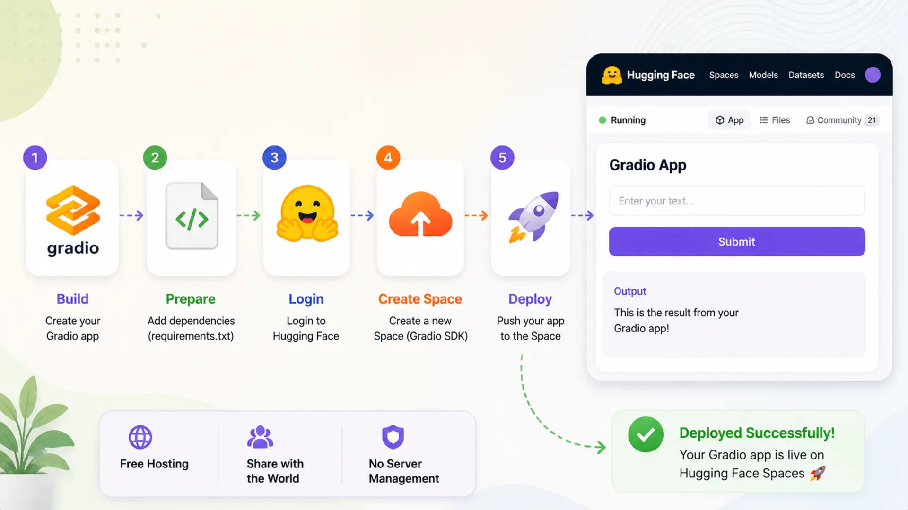
🚀 Deploying your machine learning app should be as smooth and exciting as building it. With the rise of no-hassle tools like Gradio and hosting platforms like Hugging Face Spaces, it's now easier than ever to create and share intelligent web apps with the world — without worrying about complex DevOps setups.
This blog will walk you through the full deployment journey using our very own RAGent Chatbot — a powerful AI assistant powered by Retrieval-Augmented Generation (RAG). But the steps covered here will work for any Gradio-based application.
🌟 Whether you're a developer showcasing your AI tool, a researcher sharing model results interactively, or an enthusiast building an intelligent prototype — this guide will help you take your app from local to live with ease.
We'll go through each phase of the deployment process — from setting up your project to making your app publicly available on Hugging Face Spaces 🌐. No need for advanced cloud knowledge — if you can write Python, you can do this!
By the end of this guide, your Gradio app will be up and running on the web, accessible by anyone with a browser. Ready to share your AI with the world? Let's get started.
📚 Table of Contents
1. Introduction
With the rapid rise of AI-powered tools, creating interactive web-based demos has become a key part of sharing and showcasing your work. Gradio makes it easy to build intuitive user interfaces for machine learning models using just a few lines of Python code. But building your interface is only half the journey — the next step is to make it available to the world.
This is where Hugging Face Spaces comes into play — a developer-friendly platform that lets you deploy and host your Gradio apps directly in the browser 🌐. No DevOps knowledge, no complex configuration — just write your code, upload your files, and your app is live.
🎯 What You'll Learn in This Guide This blog will walk you through a hands-on, beginner-friendly deployment process. By the end, you'll know how to:
- 🛠️ Set up a well-structured Gradio project
- 📦 Create essential files like app.py and requirements.txt
- 🔐 Manage secrets and API keys securely (if needed)
- ☁️ Deploy the app to Hugging Face Spaces in minutes
- 📄 Write a clear and helpful README
- 📤 Share your deployed app with a public link
🔍 Example Project: RAGent Chatbot As a working example, we'll use our RAGent Chatbot — an AI assistant powered by Retrieval-Augmented Generation (RAG). Users can ask natural language questions like "What are the latest AI trends?" and receive intelligent answers sourced from documents and tools. It runs locally using Gradio, and we'll show you exactly how to deploy it live on Hugging Face Spaces.
2. Prerequisites
Before you begin deploying your Gradio app to Hugging Face Spaces, make sure the following essentials are ready. These will ensure a smooth and uninterrupted setup experience. This section outlines both the tools you'll need and the foundational knowledge expected for this tutorial.
✅ 1. Python Environment
To build and deploy Gradio apps, you'll need Python installed on your system — specifically version 3.7 or later. Most modern systems support this out of the box. You can verify your Python version by running:
💡 If Python is not installed, you can download it from the official website: https://www.python.org/downloads/.
✅ 2. Basic Python Knowledge
While this tutorial is beginner-friendly, having some basic familiarity with Python will help you follow along. You should be comfortable with the following concepts:
- ✍️ Writing simple Python scripts
- 📦 Installing packages using pip
- 📁 Organizing and importing functions from Python files
Don't worry if you're not an expert — as long as you understand how to run a script like app.py and install packages, you'll do just fine!
✅ 3. Gradio Library
Gradio is the core framework we'll use to create a clean and interactive web interface for your AI model. It's lightweight, intuitive, and powerful. To install Gradio, simply run:
💡 Make sure you install the latest version of Gradio to ensure compatibility with Hugging Face Spaces.
✅ 4. Hugging Face Account
To deploy and share your app with others, you'll need a free Hugging Face account. It only takes a minute to create.
Once logged in, you'll have access to your personal or organizational dashboard, where you can manage your Spaces (hosted apps), upload code, monitor usage, and more.
📝 Sign up or log in at: https://huggingface.co/join
🌱 Notes: If you're following this guide to deploy the RAGent Chatbot, make sure it's already tested and working in your local environment before uploading to Hugging Face.
3. Set Up the Gradio App
In this section, we'll prepare the RAGent Chatbot for deployment on Hugging Face Spaces. A well-structured project layout and essential deployment files are crucial to ensure the app runs smoothly in the hosted environment.
Let's walk through how the project was structured and which files are important for successful deployment.
📁 Project Structure
We organized the RAGent Chatbot project in a clean, modular way to ensure scalability and easy maintenance. Below is a snapshot of the project's directory layout:
✅ Key Point: The app.py file must be placed at the root level. Hugging Face Spaces uses this as the entry point to launch your app automatically.
📦 Create requirements.txt
Next, we created a requirements.txt file that lists all the Python dependencies required for the app to function properly. Hugging Face uses this file during the build process to install the necessary packages inside the environment.
Here's the list of packages we used for the RAGent Chatbot:
💡 Tip: If your app uses private or sensitive keys (such as API keys), avoid hardcoding them. Instead, use environment variables via the python-dotenv package, which we've already included above.
🖥️ Create app.py - The Required Entry Point
To successfully deploy your Gradio app on Hugging Face Spaces, your project must include a file named app.py at the root directory. Hugging Face Spaces looks for this file as the default entry point to launch your application.
⚠️ Important: If you name your main file anything else — like web_app.py or main.py — your app will not launch. At the time of writing, Spaces does not allow custom entry point filenames.
✅ What We Implemented in app.py
In the RAGent Chatbot project, we designed the interface logic inside a class named WebApp. We used gr.Blocks to build a custom and modular Gradio interface. This approach kept the frontend presentation separate from the backend logic, improving maintainability and clarity.
At the bottom of the file, we added a standard launcher block to bootstrap the app:
This ensures Hugging Face can correctly detect and run the app when it's deployed.
🔧 Behind the Interface: What app.py Does
The WebApp class ties together several important components of the chatbot system:
- ✅ Agent Execution: Each query from the user is passed to the Agent class via agent.run(). This internally handles the full retrieval and reasoning pipeline using a RAG-based system.
- 📂 File Upload Handling: Users can upload multiple document types (PDF, DOCX, PPTX, TXT, JSON, etc.). These are processed, chunked, and stored into Qdrant, our vector database client.
- 🧠 Chat Memory: Session context is maintained using MemoryManager, which mimics LangChain's HumanMessage and AIMessage types for continuity in conversation.
- 🎨 Custom Styling: Visuals and theme are controlled via a helper method HtmlTemplates.css(), ensuring a clean and consistent look.
Here's a simplified version of the code inside app.py:
By placing this complete and well-organized app.py at the root of our project, we ensured that Hugging Face Spaces could detect and run our chatbot without any issues. This setup is universal and can be adapted to most Gradio-based apps with minimal modification.
4. Step-by-Step Deployment to Hugging Face
After building and testing the RAGent Chatbot locally, the final milestone was to take it live using Hugging Face Spaces — a fast, free, and powerful hosting platform for machine learning applications, especially those built with Gradio.
This section breaks down the entire deployment workflow into simple, actionable steps. From creating your Hugging Face account to uploading your project and going live, we've kept everything beginner-friendly and easy to follow.
🧑💻 Create a Hugging Face Account
To deploy your Gradio application, you'll first need to create a free account on Hugging Face. This account will give you access to your own dashboard where you can host and manage your ML demos using Spaces.
🔗 Step 1: Visit Hugging Face Navigate to the official website: https://huggingface.co
📝 Step 2: Sign Up Click the "Sign up" button at the top-right corner of the homepage. You can register using your email address, or link your GitHub or Google account for quicker setup.
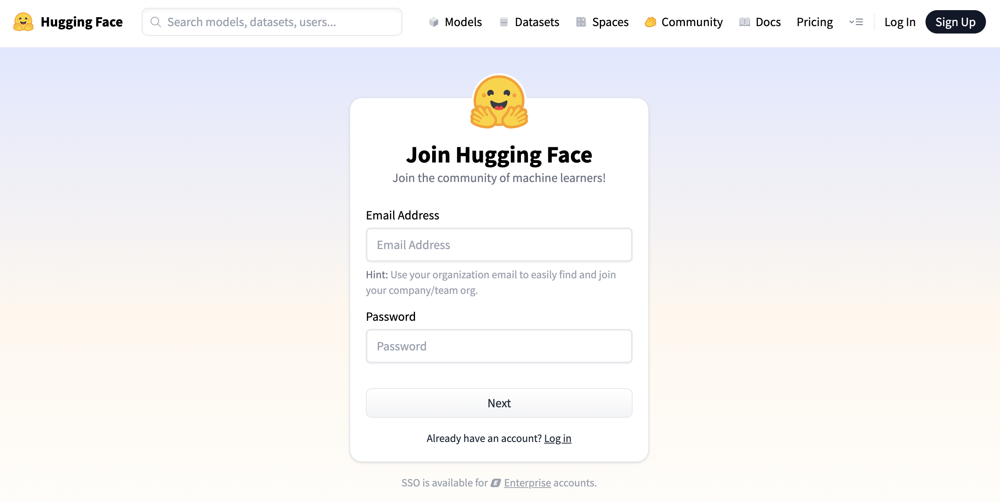
Figure 1: Hugging Face Sign Up
📩 Step 3: Verify Your Email Hugging Face will send you a confirmation email. Click the link in that email to verify your address and activate your account. Without verification, you won't be able to deploy apps.
📁 Step 4: Access the Spaces Dashboard After logging in, click on your profile avatar (top right) and select "Spaces" from the dropdown menu. Or, visit it directly here: https://huggingface.co/spaces
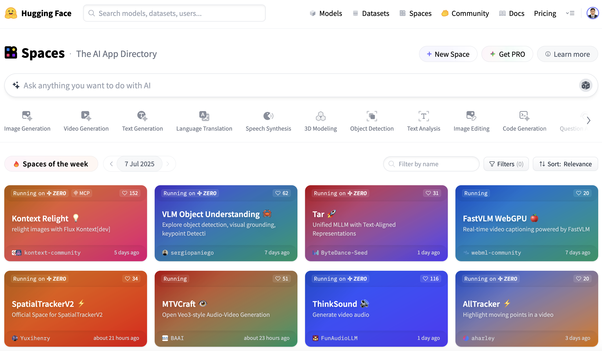
Figure 2: Hugging Face Space Dashboard
This is your main hub for creating, deploying, and managing all your hosted Gradio apps — including our RAGent Chatbot.
🏗️ Create a New Space
Once you're logged into your Hugging Face account, the next step is to create a new Space — a hosted environment where your Gradio app will live. Here's how we created a new Space for the RAGent Chatbot and what you need to know during the setup process.
🆕 Step 1: Click "Create new Space" Go to the Spaces page and click the "+ New Space" button. This opens a form where you'll configure the settings for your application.
🗂️ Step 2: Fill in the Space Details You'll be asked to provide the following information:
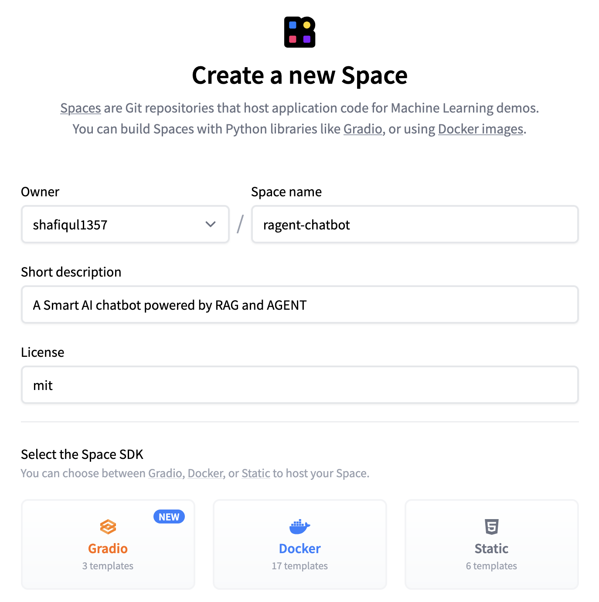
Figure 3: Create New Hugging Face Space
- Space Name: Choose a unique and relevant name, such as ragent-chatbot.
- Short Description: Provide a brief summary of your app's purpose (within 60 characters).
- Select the Space SDK: Choose Gradio as we're deploying a Gradio-based app.
- Hardware: By default, Hugging Face provides CPU Basic (2 vCPUs, 16 GB RAM, FREE). This is sufficient for most apps. You can select other options via the dropdown if needed, but note that premium hardware will incur charges.
- Visibility: Decide whether to make your Space Public (anyone can view and use it) or Private (restricted access). By default, it's set to Public.
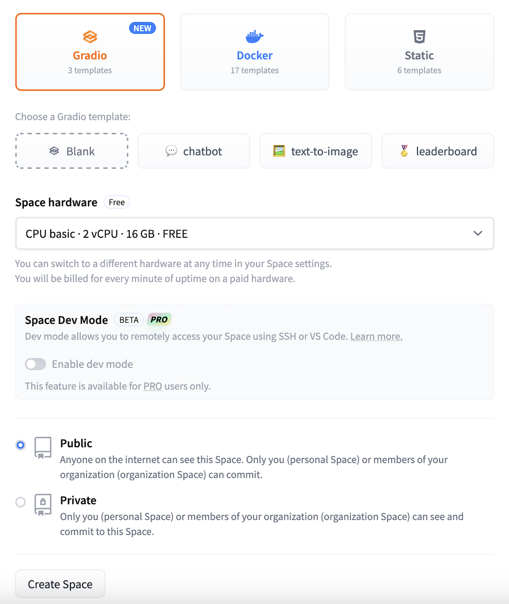
Figure 4: Select Space SDK
💡 Note: GPU hardware is only required for apps that rely on GPU-accelerated computations such as image generation or deep learning inference. For most Gradio and Streamlit apps, the default CPU setting is more than enough.
🖱️ Step 3: Click "Create Space"
Once all required fields are complete, click the Create Space button. Hugging Face will generate a repository for your app and show a default placeholder application until your files are uploaded.
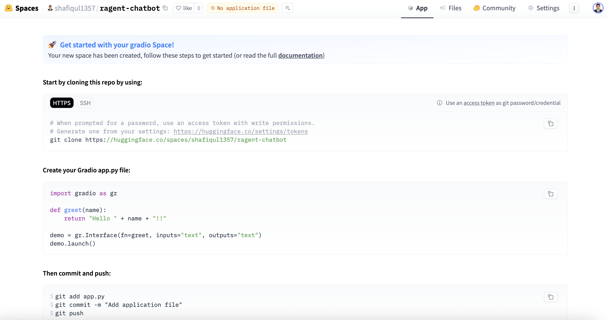
Figure 5: Gradio Default screen
🔐 Configure Secrets
In the RAGent Chatbot, we use external APIs and services — for example, the Gemini API key and other environment-specific configurations. To protect sensitive information, Hugging Face offers a secure way to manage and inject secrets into your app's runtime — without exposing them in your code or repository.
Here's how to configure your secrets securely:
- Navigate to your Hugging Face Space, then click on Settings → Variables and Secrets.
- Click the "New Secret" button. A popup window will appear where you can enter your secret's name (e.g., GEMINI_API_KEY) and its value (your actual API key).
- Click Save to securely store the key.
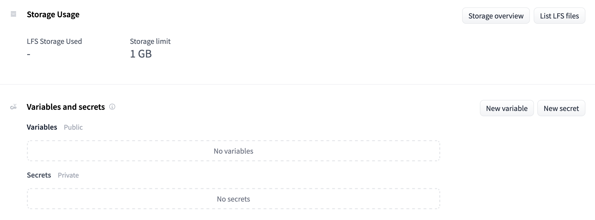
Figure 6: Hugging Face Space Variables and Secrets
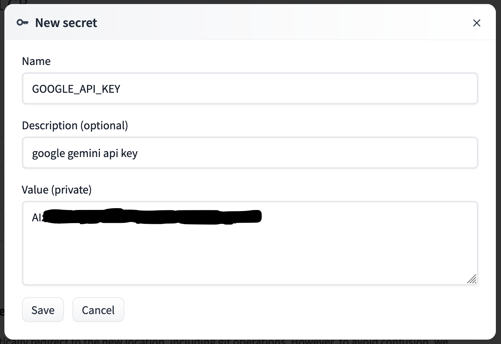
Figure 7: Add Secrets to Face Space
🔒 Security Note: These secrets are not visible in your code and are automatically injected into the environment at runtime. Use os.environ.get("SECRET_NAME") in your Python code to access them safely.
After adding all required keys, you'll see a list of your saved secrets in the interface.
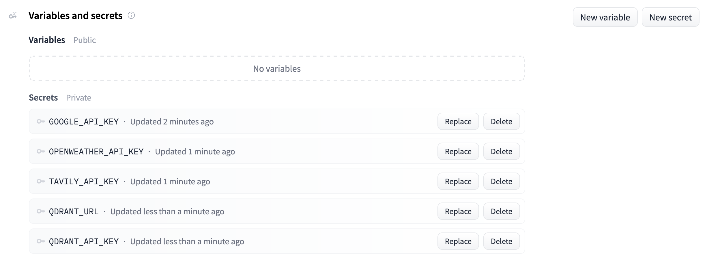
Figure 8: All added secrets
This approach replaces the need for a .env file and ensures that your credentials remain protected — even in public repositories.
📤 Upload Source Code
Once your app is ready and your Hugging Face Space has been created, it's time to upload your source code. Hugging Face provides two convenient options to do this — via Git or through the web interface.
✅ Method 1: Using Git (Recommended for Developers)
We used the Git method for our RAGent Chatbot deployment to keep version control, rollback support, and easier collaboration. Here's how to do it:
- Install Git LFS (Large File Support) and clone your Hugging Face Space repository:
- Copy all your project files into this directory. This includes:
- app.py, agent.py, rag.py, config.py
- All folders such as tools/, retriever/, vector_db/
- Supporting files like requirements.txt, README.md, and .env.example
- Commit and push the code to Hugging Face:
💡 We excluded .env in .gitignore to prevent uploading sensitive data. Instead, define secrets securely in the Hugging Face Secrets section and access them at runtime.
🖱️ Method 2: Upload via Web Interface
If you're not comfortable with Git or working from a restricted environment, Hugging Face offers a very simple and reliable web-based method for uploading your files:
- Open your Space and navigate to the "Files and versions" tab.
- Click the "+ Contribute" button and select "Upload files" from the dropdown menu.
- Select all required files and folders, or drag and drop them into the upload area.
- Add a commit message, then click "Commit changes to main".
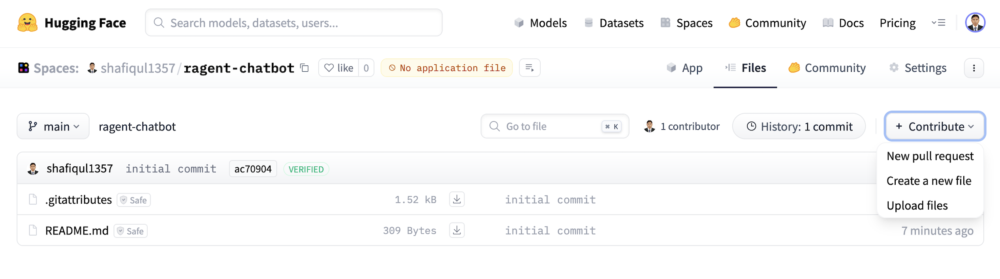
Figure 9: Upload source code
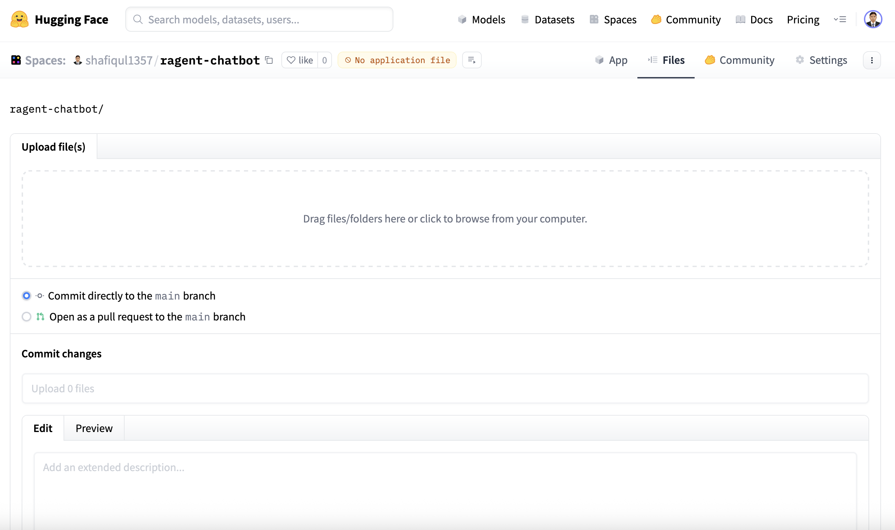
Figure 10: Drag and drop files
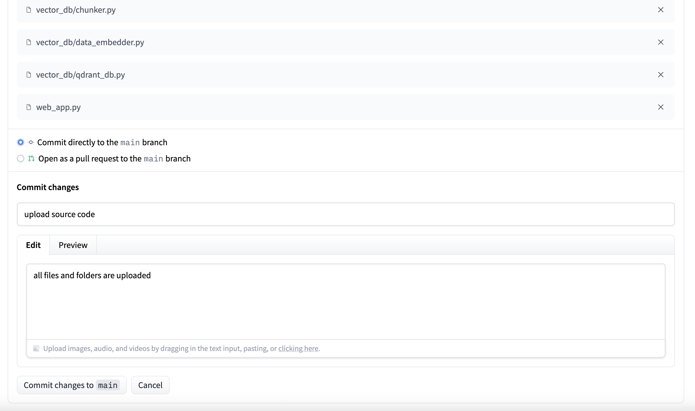
Figure 11: Commit files in Hugging Face
Once the files are uploaded, Hugging Face will automatically install the dependencies listed in requirements.txt and launch your app using app.py.
5. Build and Run App
Once we pushed the RAGent Chatbot source code to our Hugging Face Space, the platform automatically took care of the build and launch process — no additional deployment scripts or manual intervention required.
Hugging Face Spaces is specifically optimized for hosting Gradio applications. As long as your project follows a few basic rules, the app builds and runs seamlessly:
- ✅ A valid app.py file exists at the project root
- ✅ All dependencies are correctly listed in requirements.txt
- ✅ No missing files or unresolved import errors
🔄 Automatic Build Triggers
One of the most powerful features of Hugging Face Spaces is its automatic build and deployment system. Here's what happens under the hood:
- 📝 Every time you add, modify, or delete a file — via Git or the web UI — the platform automatically re-triggers the build process.
-
🧱 During the build, Hugging Face:
- Installs dependencies from requirements.txt
- Loads environment variables from the Secrets manager
- Runs app.py to start the application
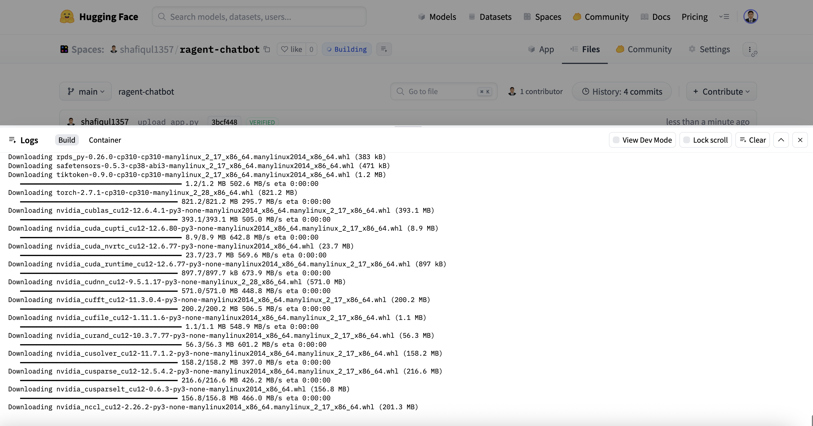
Figure 12: Build app
This auto-build workflow makes development highly efficient — there's no need to restart or manually deploy after each change. Updates are reflected in real time once the build is complete.
🛠️ Tip: If your app fails to start, check the "Build Logs" tab on your Space page. It provides detailed output for debugging any issues during the build or execution stages.
✅ Live Deployment
After a successful build, our RAGent Chatbot became instantly available at the following public URL:
🔗 https://huggingface.co/spaces/shafiqul1357/ragent-chatbot

Figure 13: RAGent Chatbot app
Through this live app, users can:
- 📂 Upload documents in supported formats such as PDF, DOCX, and TXT
- 💬 Interact with the chatbot using natural language questions
- 🤖 Receive real-time, intelligent answers powered by a retrieval-augmented generation (RAG) pipeline
The interface is built with Gradio Blocks and customized using in-house styles to deliver a smooth and responsive user experience — across both desktop and mobile devices.
6. Writing the README File
A well-crafted README.md file plays a vital role in communicating what your application does, how it works, and how others can use or contribute to it. For the RAGent Chatbot, we made sure to write a clear, organized, and visually engaging README that functions as the landing page for the app on Hugging Face Spaces.
Below is a breakdown of how we structured our README and what each section accomplishes:
🧾 YAML Header Metadata
At the very top of the README, we included a YAML header block. Hugging Face Spaces uses this metadata to visually style your app page and define runtime behavior:
- title, emoji, colorFrom, and colorTo define the visual theme.
- sdk and app_file tell Hugging Face how to launch the app.
- short_description gives users a one-line summary in the Spaces directory.
🖼️ Visual Preview
We added a preview image to make the page visually appealing and informative at a glance. This image is stored in the figure/ folder:
🧠 App Description and Purpose
We opened the README with a brief overview of what the app is and what it does. For example:
This section helps readers — both technical and non-technical — understand what problem the app solves and how it works at a high level.
🛠 Features
We then listed key capabilities of the app, using emojis to make it more engaging:
- 🔍 Hybrid Search (BM25 + vector search)
- 🧠 ReAct Agent (uses tools only when needed)
- 🎛️ Gradio UI (modern interactive interface)
- 🔧 Modular Tools (easily extensible components)
🧱 Tech Stack
We clearly stated the core technologies behind the app, making it easy for developers to explore or contribute:
- Frontend: Gradio
- Agent Framework: LangChain
- Vector DB: Qdrant
- LLM: Gemini
- Embedding Model: BAAI/bge-large-en-v1.5
💡 Example Queries
To help new users get started, we added several sample prompts that showcase the app's capabilities:
- "What is LangChain and how is it different from LlamaIndex?"
- "Who is the CEO of OpenAI and when was the company founded?"
- "What is 245 * 92?"
This invites users to immediately interact with the app in a meaningful way.
🔗 External Links
Finally, we closed the README with quick-access links to both the source code and the live app:
By keeping the README informative, easy to scan, and well-structured, we created an inviting entry point for users and contributors alike.
7. Share and Showcase Your App
After deploying the RAGent Chatbot to Hugging Face Spaces, the next step was to share it with the world and make it easily discoverable. Hugging Face offers several built-in features and best practices to help promote your app and attract users.
🔗 Share the Live App URL
Our live chatbot is publicly available at:
👉 https://huggingface.co/spaces/shafiqul1357/ragent-chatbot
You can share this link with:
- 👥 Teammates and collaborators
- 💼 Potential employers or clients
- 🌍 Open-source and ML communities on GitHub, Reddit, or LinkedIn
✅ Anyone with the link can try the chatbot directly in their browser — no installation, no setup.
🌐 Hugging Face Spaces are fully responsive and work across desktop and mobile, ensuring a smooth user experience on any device.
🌟 Make the App Discoverable
To increase visibility and reach a wider audience, we followed a few discovery-boosting steps:
- 🏷️ Added relevant tags like gradio, rag, chatbot, and document-qa
- 🖼️ Uploaded a visual thumbnail via icons/ to make the app stand out
- 🌍 Set the visibility to Public so it shows up in Hugging Face search and category listings
- 📢 Shared the app link on platforms like LinkedIn, Twitter/X, GitHub, and Reddit
Users can also discover the app by searching for the app name directly within Hugging Face Spaces.
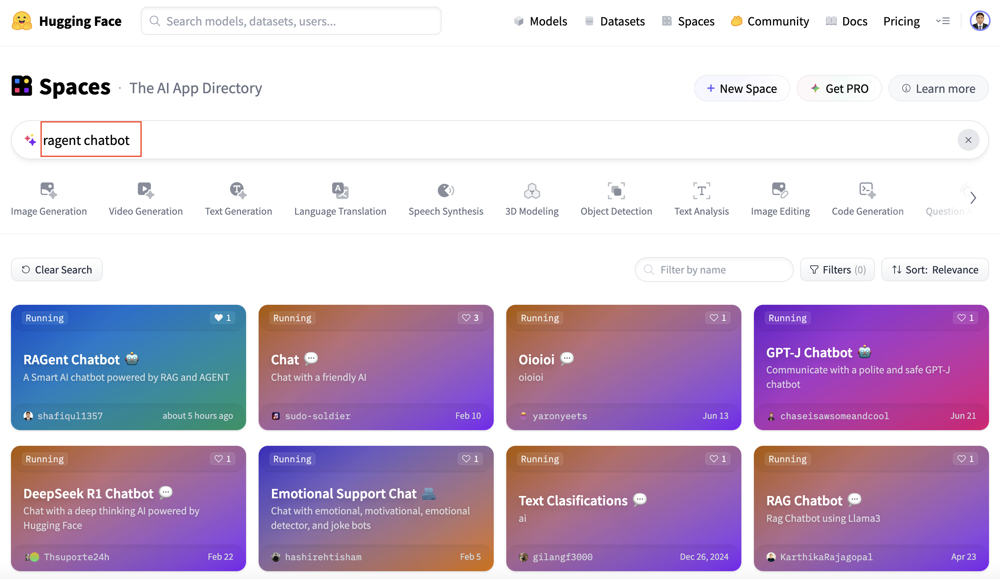
Figure 14: Search app by name
🧩 Apps with proper metadata, clear naming, and well-maintained README.md files are more likely to be featured and discovered by the Hugging Face community.
With the app now published and shared, users can easily upload their own documents, ask natural questions, and explore the full capabilities of our RAG-based conversational AI in real time.
8. Conclusion
Deploying AI applications should be just as seamless as building them — and with Gradio and Hugging Face Spaces, we accomplished exactly that for our RAGent Chatbot.
In this guide, we walked you through the entire deployment lifecycle, from preparing your local project to making it live and shareable:
- 🧱 Structuring the project and organizing essential files
- 📄 Creating app.py as the entry point for Hugging Face
- 🔐 Securing API keys using Hugging Face Secrets
- 🚀 Uploading, building, and running the app with zero manual deployment
- 📢 Sharing your app and boosting discoverability
- 📝 Writing a complete README.md to support users and contributors
The RAGent Chatbot showcases the power of combining Retrieval-Augmented Generation (RAG) with agent-based reasoning — resulting in an extensible AI assistant that can retrieve, reason, and act intelligently in real time.
Thanks to Hugging Face Spaces, this entire system is now accessible via the browser — no installations or setup required.
👉 Try it Live: https://huggingface.co/spaces/shafiqul1357/ragent-chatbot
📦 Source Code: GitHub Repository
Whether you're deploying your first ML demo or launching a production-grade research assistant, we hope this guide empowers you to bring your ideas to life with confidence and clarity.

Technical Stacks
 Python
Python Gradio
Gradio Hugging Face
Hugging Face RAG
RAG Google Gemini
Google Gemini Qdrant
Qdrant LangChain
LangChain Prompt Engineering
Prompt Engineering Wikipedia
Wikipedia Tavily API
Tavily API OpenWeatherMap API
OpenWeatherMap API
References
-
 GitHub Repository:
RAGent Chatbot
GitHub Repository:
RAGent Chatbot
-
Live App in Hugging Face Space:
RAGent Chatbot App
-
Gradio:
Gradio Website
-
 Medium Article:
Read the Blog on Medium
Medium Article:
Read the Blog on Medium